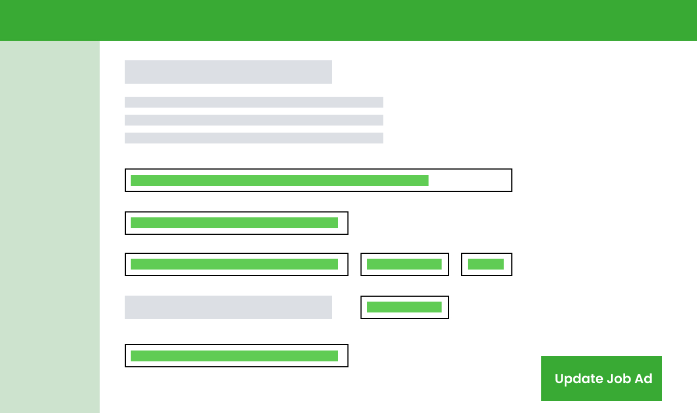
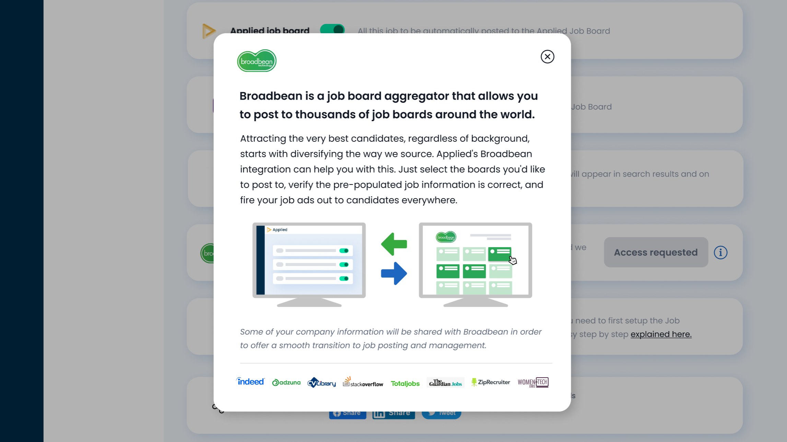
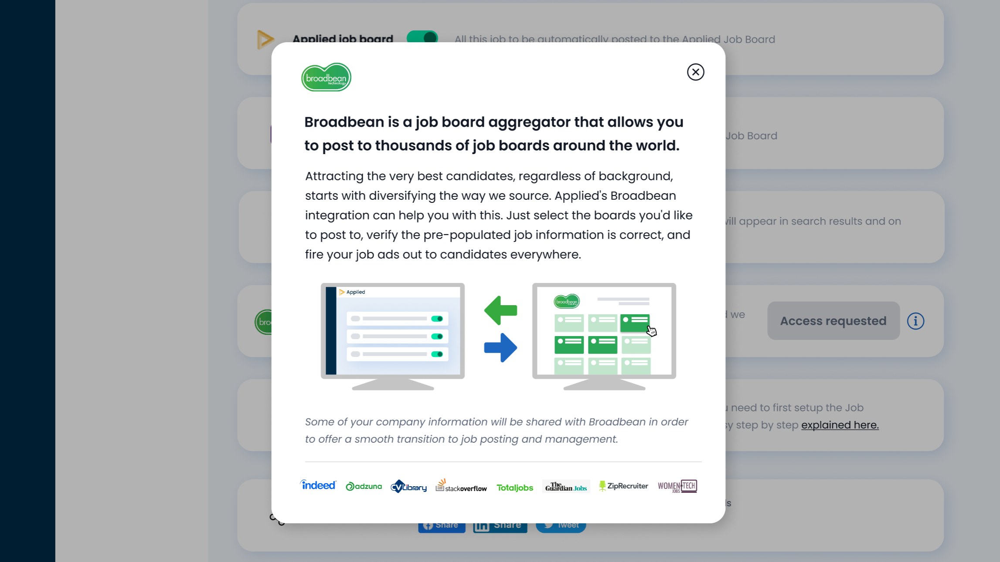

PRODUCT DESIGN – UX, UI
Job board integration
Defining the problem
Lack of job board integrations was a regular sales objection. Many organisations use number of applications as a measure of recruitment team performance, and aim for wide reach at high efficiency. For Applied, we achieve impact by ensuring the right candidates get hired fairly. Wider reach will result in more applications, which in turn increases the probability of the right candidate finding the role.

The range of job boards offered by Broadbean, a UK-based job board aggregator, is extensive and research concluded that also appealing to our four core markets. Here’s where our discovery took us:
🤕 User Problem: "I want to introduce Applied at my organisation, but the CFO/COO won’t sanction the procurement because she is concerned that we aren’t able to post to a range of job boards, which we can with other ATS."
🤞 Outcome: "Give buyers the confidence that they are not losing functionality from their existing ATS that they perceive as important. Allow the hiring team (platform users) to feel confident they've given their job advert the best chance of success."
🎲 Hypothesis: "We believe that by enabling access to a broad range of job boards via an integration with Broadbean, we can both increase acquisition of new users (particularly larger organisations) and increase the average account value." – "Access to job board aggregation via Applied will mean I can quickly and easily attract more candidates across a broader range, saving me time and effort, while improving the likelihood of hiring an outstanding candidate."
🤕 User Problem: "I want to introduce Applied at my organisation, but the CFO/COO won’t sanction the procurement because she is concerned that we aren’t able to post to a range of job boards, which we can with other ATS."
🤞 Outcome: "Give buyers the confidence that they are not losing functionality from their existing ATS that they perceive as important. Allow the hiring team (platform users) to feel confident they've given their job advert the best chance of success."
🎲 Hypothesis: "We believe that by enabling access to a broad range of job boards via an integration with Broadbean, we can both increase acquisition of new users (particularly larger organisations) and increase the average account value." – "Access to job board aggregation via Applied will mean I can quickly and easily attract more candidates across a broader range, saving me time and effort, while improving the likelihood of hiring an outstanding candidate."


Ideation & Design
We started our ideation phase by mocking up user flows, validating different assumptions with input from tech and users themselves – internal and externally. We went through some training with Broadbean, to get to understand their product well and how could it seemingly integrate with ours.
Integration with Broadbean boards was offered to users as an upsell, which meant that we needed to promote it whilst making very clear what it was and how to request access.
Integration with Broadbean boards was offered to users as an upsell, which meant that we needed to promote it whilst making very clear what it was and how to request access.
 

The aim for our MVP was to allow our users to easily post their job to as many pre-configured job boards as they like as part of the role building process in 4 steps:
- Click ‘post to boards’ in the role builder / distribution options;
- Select which job boards are relevant to their role;
- Confirm the job ad details are correct;
- Hit send.


Testing & build
We prototyped our solution and test the UI with users – we went through roughly four iterations before the work went into build. We created a beta group of users, that would get early access to this feature in exchange for regular feedback to help us shape this part of the app in the future.
After 5 months, we’ve already proofed Broadbean is unlocking deals, and being a lever to pull new accounts. We removed the feature flag, and this is now available to all users.
After 5 months, we’ve already proofed Broadbean is unlocking deals, and being a lever to pull new accounts. We removed the feature flag, and this is now available to all users.
Role Lead Product Designer – UX, UI
Responsibilities I contributed to primary and secondary research, concept development, and did all user interface design. I led the visual design phase by defining the style and updating components in the design system when needed.
Launch date February 2022
Responsibilities I contributed to primary and secondary research, concept development, and did all user interface design. I led the visual design phase by defining the style and updating components in the design system when needed.
Launch date February 2022